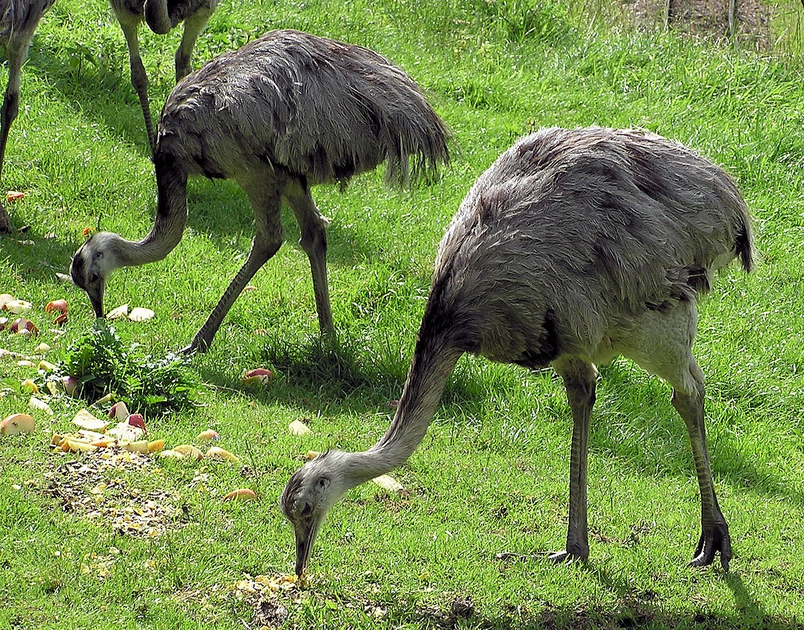
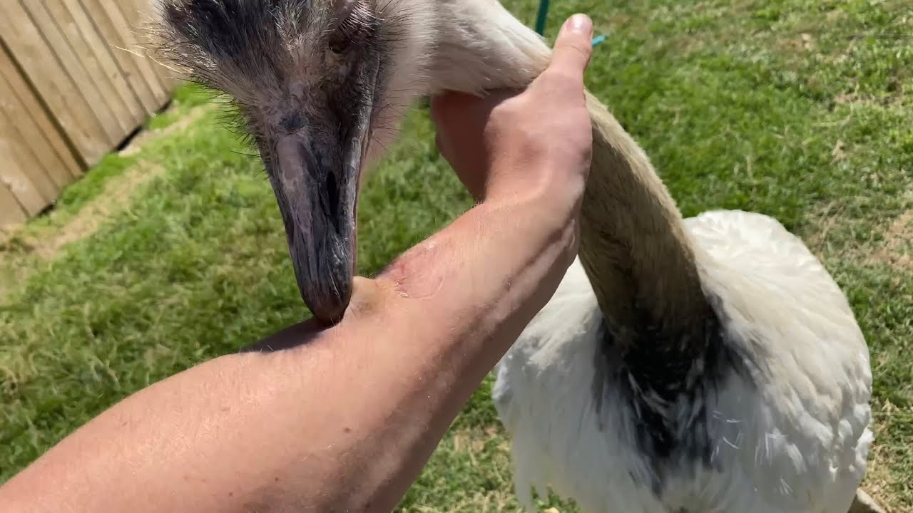

The rhea (Rhea americana or Rhea pennata) is a species of large flightless bird that is native to South America (so many cool animals in South America!). Rheas are related to ostriches, the main difference being that rheas' legs aren't as strong as ostriches' legs. However, they make up for it by pecking with their beak.


The rhea has unusually long wings for a flightless bird, but they still aid the rhea while running as it helps with balance and dodging predators.
Male rheas are the ones that incubate the eggs and care for the young, not the females. As a result, male rheas are extremely aggressive and attack anything that comes close to them.